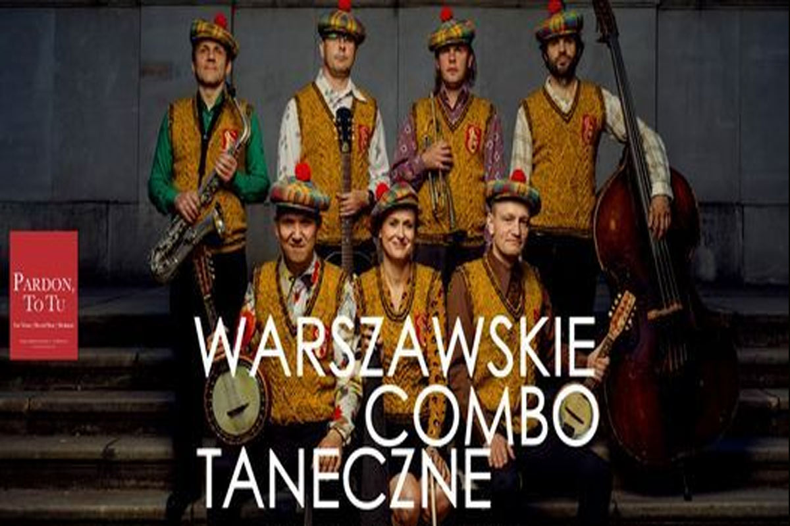

MUSIC EVENTS IN WARSAW
Upcoming Music Events, Festivals And Concerts In Warsaw
Nightlife is not all parties, it is the live music shows, gigs at cafes or a kickass concert. You get to witness the best of the music events in Warsaw; from live music to the tours of artists, there is a lot that the city has in store for you. For a different choice of music, there are distinct events in Warsaw. For classical music lovers, they have classical music shows and concerts, while for the groovers they have concerts in Warsaw to dance your heart out.
The city is never out of stock when it’s music events so get grooving already.

Warsaw Dance Combo in Pardon, To Tu
Mar 16, 2022
For more than a decade, this 7-person band has been movingly proving how to save beautiful pre-war Warsaw songs that, 80 years ago, entertained and touched the audience at revues, dances, from oblivion.
Am Interested